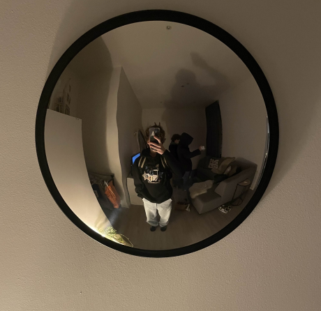

Don’t walk in front of me… I may not followDon’t walk behind me… I may not lead Walk beside me… just be my friend
Hey, ik ben Yente en ik ben eerstejaarsstudent aan Thomas More in Mechelen, waar ik de opleiding Experience Design volg. Ik ben enthousiast over het creëren en ontwerpen van websites en vind het geweldig om hiermee aan de slag te gaan. Hoewel ik nog niet zoveel ervaring heb als de ouderejaars, compenseer ik dat met mijn motivatie en enthousiasme. Ik kijk ernaar uit om jullie meer te leren kennen en mijn skills verder te ontwikkelen!
